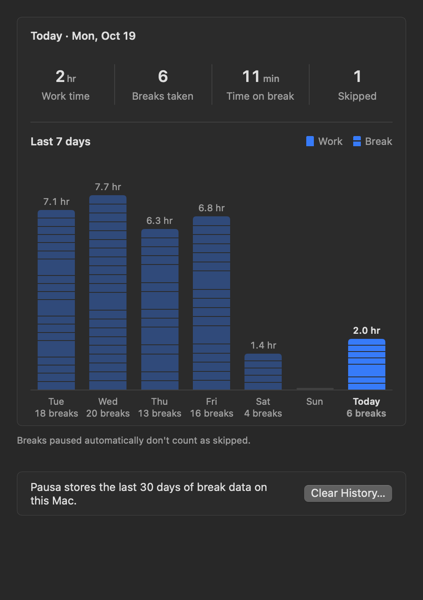
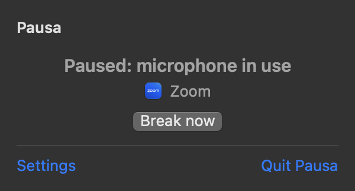

Did you know you have the right to look away from your screen? The Constitution doesn't say so, but your eyes do. Pausa reminds you to rest every once in a while, and stays quiet when you're in a meeting, watching a video, or sharing your screen. Better use Pausa!
Look far. Then a little farther.Look far. Then a little farther.
Look far awayLook far away
After 90 minutes, this long break can't be delayed.
Break skipped — back to your screen.
Painted in-app with a GPU Kuwahara oil shader. Hold the skip capsule (or hold Space while focused) for 2 seconds to skip.
Rhythm & the 90-minute hard line
Rigid timers get quit on the first busy afternoon; infinitely snoozable timers get ignored all day. Pausa pairs a light 20-minute cadence with a finite snooze budget and one non-negotiable ceiling.
Short break20sec / 20 minA soft blurred veil across every connected display. Click-through so nothing underneath loses focus, wiping itself away left to right as the 20 seconds elapse.
Long break5min / 60 minEvery third break opens a painted landscape—or your own photo, measured and dimmed automatically so white text stays legible. Snooze 5 or 15 minutes while your budget lasts.
Hard line90min ceilingEven when calls or snoozes push breaks back, continuous screen time stops at 90 minutes. Past the hard line, snooze and Space-to-skip step aside until you take the rest.
Heads-up before anything covers your screenA quiet top card and a small countdown pill near the pointer appear seconds before a break, so you can finish a thought or snooze without breaking stride.
Waits until you stop typing or draggingIf a break arrives mid-sentence or mid-drag, Pausa holds up to two minutes for a natural pause in keyboard and mouse input before fading in.
Dims after dark and nudges you to bedScenes soften at 18:00. After 23:00, the break screen drops to low-luminance midnight glass and switches its prompts to gentle reminders to close the lid.
30-day local rhythm logWork spans and completed breaks stay strictly on your Mac. Breaks held automatically for meetings or videos never count against you as skipped.

Zero-permission auto-pause
Pausa requests zero macOS TCC permissions—no Screen Recording, no Accessibility, no Input Monitoring, and zero network telemetry. It reads public system state and shows the exact reason right in the menu bar.
Real macOS popover

Zoom active · CoreAudio input + Camera hardware state
Install & specifications
Pausa is distributed directly as a universal disk image—free to use at home or at work, with no account and no background daemon.
02Open Pausa. macOS blocks the first launch because the build is ad-hoc signed rather than notarized under a paid Apple Developer certificate.
03Open System Settings › Privacy & Security, scroll to Security, and click Open Anyway. That is the only time you need to do this—subsequent updates verify via EdDSA-signed Sparkle feeds and install after breaks finish.
SystemmacOS 13 Ventura or later (Liquid Glass on macOS 26+)